上游租約與到期風險
屋主的約先到期，租客還在住
兩份租約並列，先到期的紅色標出，60 天前自動建立續租待辦；今天有 3 間命中。
看導覽 ›進系統操作 ›

08:30 管理員的早上
異常才找人，其餘 96 間不打擾
打開系統，看到的不是 103 間的清單，而是今天真的需要人判斷的 7 件：帳款不符、欠租、AI 無法判斷的修繕、屋主合約快到期、押金未結算、空房逾 14 天。處理完，數字歸零。
今天需要人工處理 7 件
09:10 一封提前 60 天的提醒
兩份租約並列，先到期的一眼看見
包租代管永遠有兩份租約。A03 的屋主合約 11 月 30 日到期，租客卻租到 2027 年中。系統把兩條時間軸疊在一起，紅色標出先到期的那份，提前 60 天建立續租待辦。今天這樣的物件有 3 間。
缺口 7 個月：租客在住，屋主合約已到期
11:00 空房才是最大的損失
超過 7 天沒租出去，系統先問是不是價格
租客在 LINE 說不續租，物件自動切成即將空房，租金建議、刊登文案的待辦跟著產生。整備 14 項全部打勾，才能標記為可出租。C08 空了 33 天，看板標紅，附上同區行情。
21:00 老闆的晚上
每一間都算到淨利，哪 5 間最賺、哪 5 間快沒了
收租率 94% 很好看，但 B07 這個月是虧的。收入減掉付屋主租金、水電、網路、管理費、修繕、折舊、空置成本，才是淨利。老闆一句話看完：中壢 40 間，淨利 82,000 元。
最賺 5 間本月淨利
快沒利潤 5 間本月淨利
每一天，每一筆
幾年後的爭議，今天就留證據
會計看不到身分證，修繕人員看不到押金。劉○○把 A01 租金從 13,000 改成 12,000，紀錄立刻多一筆。通知何時送達、何時回覆，全部留存。資料屬於安居，隨時完整帶走。
操作紀錄
租客 王○○ · A01
20 個功能，7 個群組
每個功能都有一條導覽，也都能進系統操作
上游、下游兩份租約並列管理，押金獨立結算，文件自動帶入資料。
上游租約與到期風險
兩份租約並列，先到期的紅色標出，60 天前自動建立續租待辦；今天有 3 間命中。
押金管理
每間押金一張卡：收到、扣除項目與依據、退款證明。退租 45 天沒結算，系統會提醒。
自動產生文件
契約、續約書、催繳通知、押金結算單等 8 種，選租客就自動帶入，一鍵用 LINE 傳。
每間房算到淨利，老闆一頁看完出租率、到期數與現金流。
每間房真正損益
每間房自動算出本月淨利與年化報酬，最賺 5 間、快沒利潤 5 間一眼看見。
老闆營運儀表板
出租率、空置天數、續租率、欠租率、包租淨利、30／60／90 天到期數與現金流。
從通知不續租到重新入住，一條漏斗加一張整備清單，空房天數一清二楚。
空房招租漏斗
不續租、整備、刊登、帶看、收訂、簽約、入住七欄看板，平均空置天數自動統計。
退租整備流程
電表、鑰匙、家具、牆面到清潔逐項檢查，需修繕直接開工單，全部完成才回到庫存。
設備有履歷、廠商有評分、報價有比對，水電異常自動抓。
設備履歷
每間房的冷氣、冰箱、熱水器都有品牌、保固與維修紀錄，累計維修費過高，AI 建議汰換。
廠商與修繕工單
廠商分類、區域、返修率與評分；工單從報修、派工、報價、核准到付款，每步留紀錄。
水電異常偵測
每房用量對照過往基準，超過兩倍或空房仍在用電就警示，一鍵派工檢查。
鑰匙與門禁管理
每間鑰匙、磁扣、遙控器的領用與歸還都有簽收，退租短少自動列入押金扣款。
租客在 LINE 自己查、自己報修，AI 依棟別回答，往返紀錄全留存，逾時自動升級。
租客 LINE 自助中心
加入 LINE 綁定房號，帳單、繳費狀態、租約到期、報修、續租、退租，選單點一下就有。
AI 客服與知識庫
垃圾怎麼丟、磁扣怎麼用、熱水器怎麼開，依租客住的棟別與房間回答，不拿網路答案亂猜。
證據留存
催租、續約、退租通知每筆留下發送、送達與回覆紀錄；照片依日期與房間永久歸檔。
通知升級機制
AI 先處理第一層，逾時才逐級升級到管理員；重大漏水立即電話加 LINE 通知值班人員。
重大事件獨立管理，權限分層，操作留痕，每天只看需要人處理的幾件。
AI 工作中心
異常才找人。帳款不符、欠租、屋主合約到期、押金未結算集中在首頁，其餘 96 間收起來。
重大事件管理
漏水、噪音、警察到場、租客失聯另開事件：等級、照片、對話、負責人與完整時間軸。
權限與操作紀錄
身分證、銀行帳戶、租金、押金依角色打碼；任何金額改動都留下一筆操作紀錄。
待辦與員工績效
管理員目前 20 件待辦、逾期 3 件一眼看見；本月入住、退租、報修、帶看各完成幾件。
所有資料可完整匯出、有 API，換系統商也帶得走。
資料匯出與所有權
租客、租約、帳款、修繕、照片隨時完整匯出，提供 API；資料屬於安居包租代管。